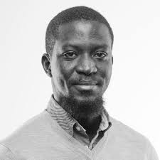
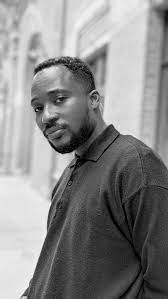

Opening on 8th July, 2023, at Kunsthalle Osnabrück at 4pm. The
installation will be sited at the former Galeria Kaufhof building
in Osnabrück(DE) and runs through 1 October,2023. The discursive
programme will take place in Tamale(GH) in November 2023.
Artist
Ibrahim Mahama

Ibrahim Mahama (b.1987) lives and works in Accra, Kumasi and
Tamale, in Ghana. His politically-driven practice explores
themes such as the contradictions inherent in economic
globalization, labour relations, and creating inclusive,
sustainable infrastructure in conditions of hopelessness. His
work has been included in numerous international exhibitions
such as the Sharjah Biennial 15 (2023), the 22nd Biennale of
Sidney (2020), the 56th and 58th Biennale di Venezia (2015,
2019), the 6th Lubumbashi Biennale in the Democratic Republic
of Congo (2019) and documenta 14 (Kassel, Athens, 2017).
Various diverse major solo exhibitions have featured the work
of Ibrahim Mahama, including Garden of Scars, oude kerk,
Amsterdam (2022); In-Between the World and Dreams, University
of Michigan Museum of Art (2020); Parliament of Ghosts, The
Whitworth, University of Manchester (2019); a straight line
through the carcass of history. 1918-1945. 2015-2018,
daadgalerie Berlin (2018); Coal Market, Schloss Strünkede,
Emschertal-Museum Herne (2018); Fracture, Tel Aviv Museum of
Art, Israel (2016). Mahama is the artistic director of the 35
th edition of the Ljubljana Biennale of Graphic Arts (2023).
He is the founder of SCCA Tamale, Red Clay and Nkrumah
Volini—sister institutions engaged in hosting cultural,
techno- scientific, and artistic programming in Tamale, Ghana.
Co-curator
Kwasi Ohene-Ayeh

Kwasi Ohene-Ayeh is a curator and critic based in Kumasi,
Ghana. He is a key member of the blaxTARLINES coalition whose
work is compelled by the radical hope proposed by karî’kạchä
seid’ou to “transform art from the status of commodity to
gift”. Ohene-Ayeh’s work in the fields of pedagogy, criticism,
curating, and art stretches across teaching at the Department
of Painting & Sculpture, Kwame Nkrumah University of Science
and Technology (KNUST), to running the annual peer-led,
schizo-pedagogical, and inoperative art school project called
CritLab since 2020 as a member Exit Frame Collective in Ghana.
He also co-organises Kelas Bareng— an experimental educational
project managed between Gudskul, blaxTARLINES, Städelschule,
and FiK - Filmkunstskolen i Kabelvåg which featured at
documenta fifteen (2022). Ohene-Ayeh is co-curator of the 12th
edition of Bamako Encounters: Biennale of African Photography
(2019-2020); Akutia: Blindfolding the Sun and the Poetics of
Peace (A Retrospective of Agyeman Ossei ‘Dota’) (2020-2021);
TRANSFER(S), Ibrahim Mahama’s solo exhibition commissioned by
Kunsthalle Osnabrück in Germany (2023); and the 35th edition
of the Ljubljana Graphic Arts Biennale with Exit Frame
Collective (2023).
Co-curator
Bettina Klein
Bettina Klein is an art historian, curator, and author. From
2013 to 2018, she was Head of the Visual Arts at the DAAD
Artists-in-Berlin Program. Previously, she was curator at the
Centre Européen d'Actions Artistiques Contemporaines in
Strasbourg, France and lecturer at Weißensee Kunsthochschule
Berlin. She has curated numerous exhibitions as well as
projects in public space, among others: Restless Monuments
Berlin, interventions in public space (2021-2023); Peilung #1:
Звіт про втрату / Verlustmeldung / Loss Report, daadgalerie,
Berlin (2022); Das Erscheinen eines jeden in der Menge,
Galerie im Schloss Bellevue, Berlin (2021); Ibrahim Mahama, a
straight line through the carcass of history. 1918–1945.
2015-2018, DAADGalerie, Berlin (2018); Restless Monuments,
Zilberman Gallery, Istanbul (2018); Parlament der Pflanzen,
daadgalerie, Berlin (2017); Rayyane Tabet, Kopf hoch! Mut
hoch! Und Humor hoch!, daadgalerie Berlin (2017); Nouvelles de
l’Île des Bienheureux, Musée du Château des Ducs de
Wurtemberg, Montbéliard, France (2016); Blind Spot,
Fassadenprojekt KuLE, Auguststraße (2015); Last Sighting,
daadgalerie, Berlin (2015); The Ukrainians, daadgalerie,
Berlin (2014).